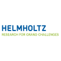

Acknowledgments¶
We are very grateful for your continuing support for Ptychography 4.0!
Please help us keeping these lists up-to-date and complete! If you feel that you should be listed here, please contact us. We are grateful for every contribution, and if your contribution is not listed here we’d like to extend our apologies and update this as soon as possible.
Creators¶
The following people in alphabetical order contributed to source code, documentation, design and management.
- Arya Bangun (Jülich Research Centre) ORCID GitHub
Reconstruction algorithms
- Alexander Clausen (Jülich Research Centre) ORCID GitHub
Member of Ptychography 4.0, LiberTEM, live processing
- Simeon Ehrig (HZDR) GitHub
Member of Ptychography 4.0, bindings between Alpaka and Python
- Anastasiia Lesnichaia (FZ Jülich)
Member of Ptychography 4.0, prototyping for scalable implementation of Single Side Band ptychography
- Heide Meissner (HZDR) GitHub
Member of Ptychography 4.0, algorithms
- Oleh Melnyk (HZM, TU Munich) ORCID GitHub
Stitching, reconstruction algorithms
- Knut Müller-Caspary (Jülich Research Centre) ORCID
Member of Ptychography 4.0, reference implementation for Single Side Band ptychography, theory, validation, experiments
- Achim Strauch (FZ Jülich)
Application and validation for SSB
- Murali Sukumaran (HZM)
Member of Ptychography 4.0
- Dieter Weber (Jülich Research Centre) ORCID GitHub
Member of Ptychography 4.0, LiberTEM, scalable implementation of Single Side Band ptychography
- Markus Wollgarten (HZB)
Member of Ptychography 4.0
- Wolfgang zu Castell (HZM)
Member of Ptychography 4.0
Contributions¶
The following people in alphabetical order contributed to the Ptychography 4.0 project in other ways.
- Rafal Dunin-Borkowski (Jülich Research Centre) ORCID
Discussions, support
- Christoph Koch (HU Berlin)
Discussions
- Penghan Lu (FZ Jülich)
Discussions
- Johannes Müller (HU Berlin)
Discussions
Notable upstream projects¶
Python, PyData universe, NumPy, CuPy, Numba, LiberTEM
Not dependencies, but notable related projects or useful tools: Hyperspy, NeXus, pyXem, https://ptycho.github.io/ptypy/
Funding¶
Ptychography 4.0 kindly acknowledges funding and support from the following sources:
Ptychography 4.0¶

We gratefully acknowledge funding from the Information & Data Science Pilot Project “Ptychography 4.0” of the Helmholtz Association.
ESTEEM3¶

This project has received funding from the European Union’s Horizon 2020 research and innovation programme under grant agreement No 823717 – ESTEEM3.
moreSTEM¶
We gratefully acknowledge funding from the Initiative and Networking Fund of the Helmholtz Association within the Helmholtz Young Investigator Group moreSTEM under Contract No. VH-NG-1317 at Forschungszentrum Jülich in Germany.

{kind=link}